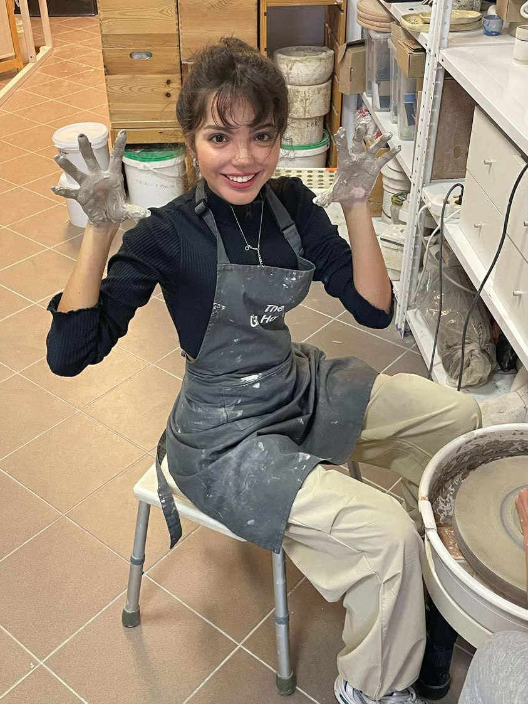
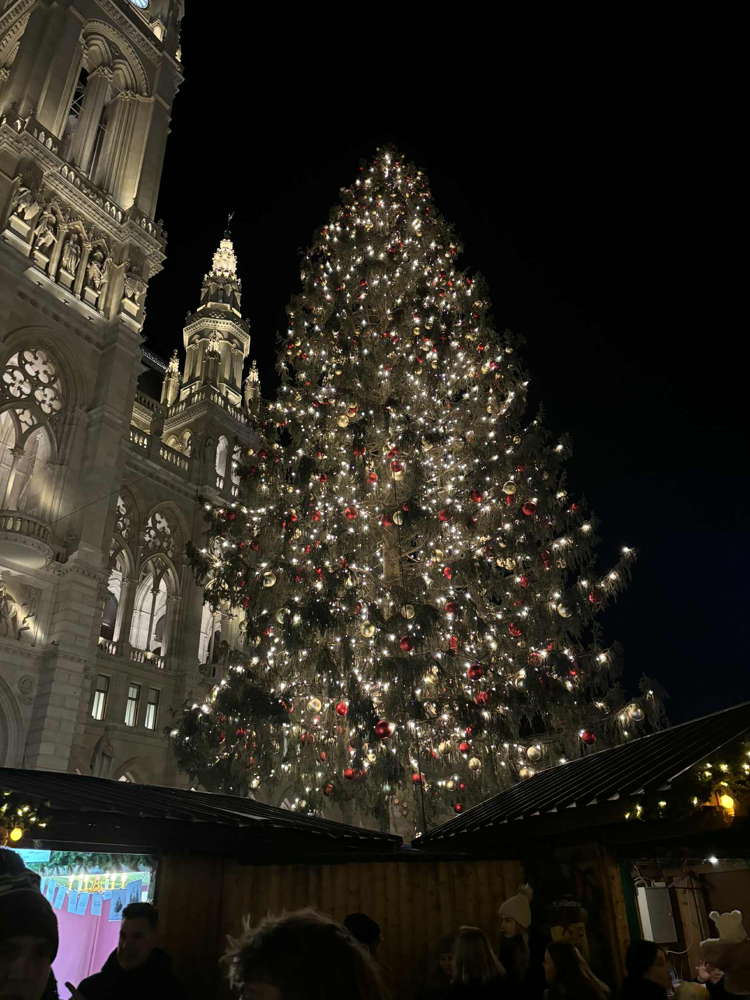
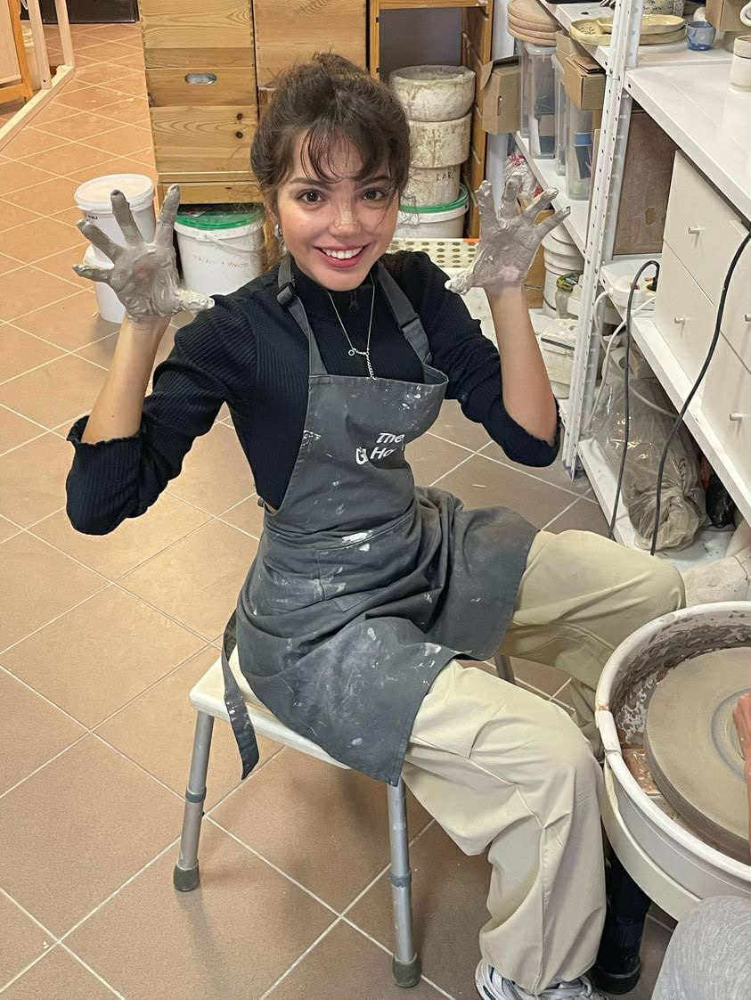
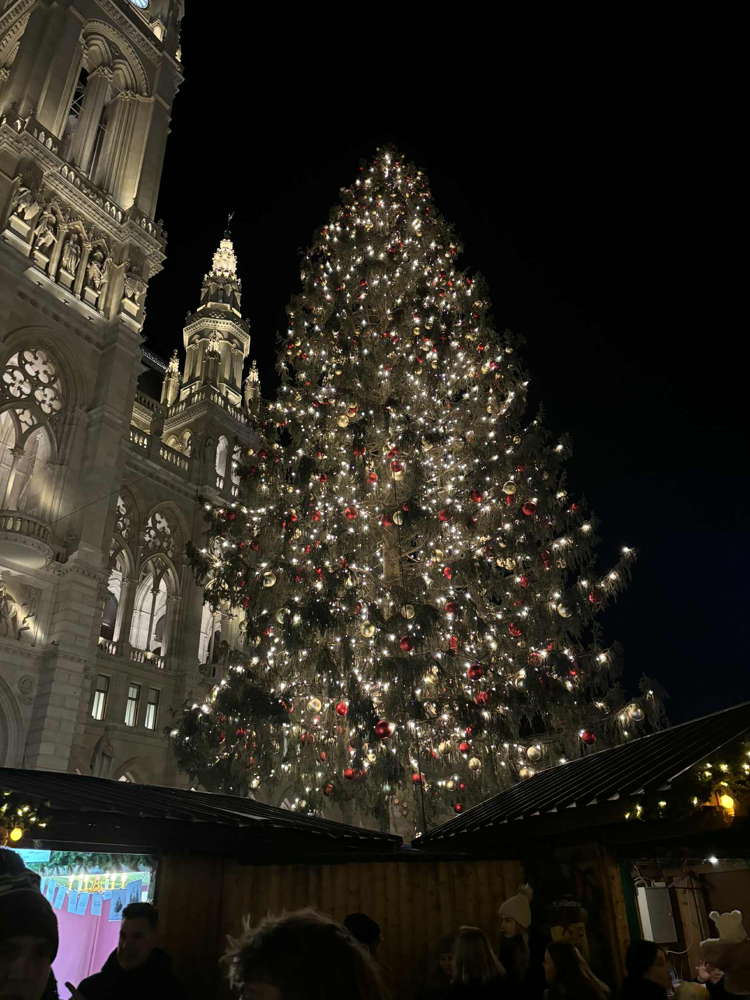

About Me
Hi! My name is Bartosz Hadala and I am a student of Electronics
and Telecommunications at AGH University of Science and Technology
in Krakow.
Throughout my studies, I have gained hands-on experience in
electronic measurements, designing analog circuits, and performing
advanced computer simulations.
I am passionate about microcontrollers, signal modulation
techniques, and all aspects of modern electronics.
I enjoy working with various programming languages and embedded
systems, constantly seeking new challenges and innovative
solutions. My academic journey at AGH has allowed me to combine
theoretical knowledge with practical skills, and I am always eager
to expand my expertise in the field of electronics and
telecommunications.
Projects
Showcase your projects here.
My Favorite Photos


 




Contact
Email: hadalabartosz@gmail.com
Phone: +48 575 121 605
LinkedIn: linkedin.com/in/bartoszhadala
City: Krakow